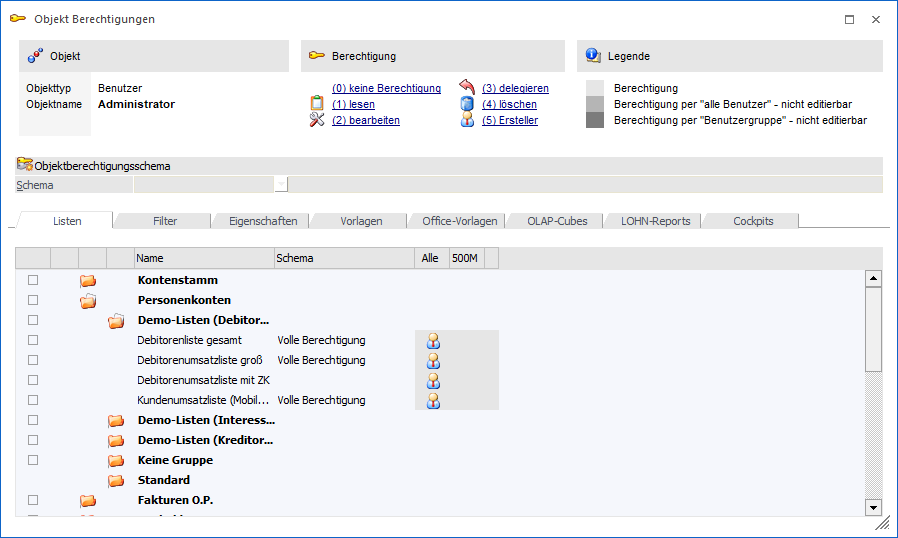
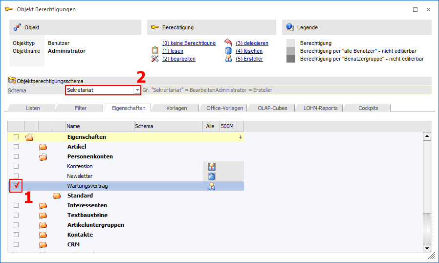
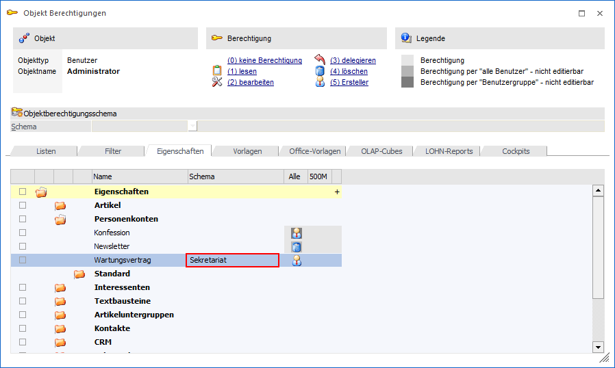
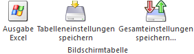

Das Objektberechtigungsfenster kann über
1 WinLine START
1 Optionen
1 Objektberechtigungen
1 Objektberechtigungen
geöffnet werden.

Es werden die entsprechenden Objekte des angemeldeten Benutzers angezeigt (jene Objekte auf die der Benutzer Berechtigungen hat). Diese Objekte sind nach Objekttyp in Register unterteilt. Abhängig davon, ob der Benutzer Berechtigungsadministrator ist oder nicht, stehen unterschiedliche Funktionen zur Verfügung.
Benutzer ist Berechtigungsadministrator
Für Berechtigungsadministratoren gibt es die Möglichkeit ein Schema für eine schnelle und einfache Berechtigungsvergabe anzuwenden.
Ø Schema
Aus dieser Auswahlliste kann ein bereits angelegtes Schema ausgewählt werden, wobei die Anlage im Programm Schema-Definition (WinLine START - Optionen - Objektberechtigungen - Schema-Definition) stattfindet. Hierfür ist es notwendig, dass zuvor via Checkbox eine Objektgruppe oder ein Objekt ausgewählt wurde, für welches ein Schema angewendet werden soll.
Ø Bezeichnung
Wurde ein Schema aus der Auswahlliste ausgewählt, so wird neben dem Namen des Schemas die Bezeichnung angezeigt.
Beispiel - Anwenden einer Schemas-Definition
Ein Benutzer hat die Eigenschaft "Wartungsvertrag" angelegt. Diese Eigenschaft soll allen Sekretariatsmitarbeitern zur Verfügung stehen und zwar mit der Berechtigung diese zu bearbeiten. Die Berechtigung "5 - Ersteller" soll dem Administrator zugewiesen werden. In der Schema-Definition wurde bereits ein entsprechendes Schema angelegt. Um dieses Schema nun diesem Objekt zuzuordnen, kann ein Berechtigungsadministrator im Register "Eigenschaften" das Objekt via Checkbox selektieren und danach das Schema das angewendet werden soll auswählen.

Wird nun der Button "Schema anwenden" gedrückt, dann werden die Objektberechtigungen - wie im Schema angegeben - auf das selektierte Objekt vergeben. In der Übersicht ist anschließend das zugeordnete Schema sichtbar.

Hinweis
Wird die Checkbox einer Hauptgruppe aktiviert, so werden alle Checkboxen der in dieser Gruppe befindlichen Objekte auch aktiviert. Das Schema wird dann auf alle ausgewählten Objekte angewendet.
Achtung
Auf "Standardobjekte" kann das Schema nicht angewendet werden. Eine Objektberechtigungsvergabe kann aber manuell erfolgen.
Benutzer ist kein Berechtigungsadministrator
Ist ein Benutzer kein Berechtigungsadministrator, so sieht dieser nur jene Objekte für die der Benutzer die entsprechenden Berechtigungen besitzt. Mittels Doppelklick auf ein Objekt in der Übersicht, öffnet sich das Objektberechtigungsfenster des gewählten Objekts und der Benutzer kann die Objektberechtigungen bearbeiten.
Tabellenbuttons

Ø Ausgabe Excel
Durch Anwahl des Buttons "Ausgabe Excel" wird der Inhalt der Tabelle an Microsoft Excel übergeben.
Ø Tabelleneinstellungen speichern
Die Spalten einer Tabelle können grundsätzlich an beliebige Positionen verschoben, bzw. in der Breite entsprechend angepasst werden. Durch Anwahl des Buttons "Tabelleneinstellungen speichern" werden die Einstellungen benutzerspezifisch gespeichert und bei dem nächsten Aufruf des Programmpunktes wieder vorgeschlagen.
Ø Gesamteinstellungen speichern
Im Gegensatz zu "Tabelleneinstellungen speichern" können mit "Gesamteinstellungen speichern" mehrere Tabellenaufbauten gespeichert und nach Wunsch geladen werden. Zusätzlich werden Sonderfunktionen der Tabelle (z.B. "Spalte gruppieren") ebenfalls bei der Speicherung bedacht.
Buttons
Ø Ok
Mit Hilfe des "OK" Buttons kann im Objektberechtigungsfenster eines bestimmten Objekts (Einzelansicht) die Berechtigungsvergabe gespeichert werden. Bei der Anwendung eines Schemas direkt im Objektberechtigungsfenster (alle Objekte) hat dieser Button keine Funktion.
Ø Ende
Mit Hilfe des Buttons "Ende" bzw. der Taste ESC wird das Fenster geschlossen.
Ø Schema anwenden
Wurde ein Schema ausgewählt und Objekte via Checkbox selektiert, dann werden via "Schema anwenden" die Objektberechtigungen wie im Schema definiert für das ausgewählte Objekt hinterlegt.
Ø Gruppen Information
Mit diesem Button kann im Objektberechtigungsfenster eines bestimmten Objekts (Einzelansicht) die Gruppen Information geöffnet werden. Diese zeigt an, welche Benutzer sich in einer bestimmten Benutzergruppe befinden.
Ø Zurück
Mittels "Zurück" Button kann man in den jeweils vorherigen Schritt zurückwechseln.